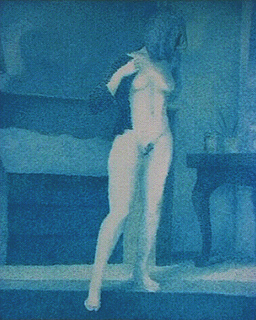

|
|
|
|
Les
bleus
English version

[Lectures
conseillées :
Le
bleu dans la langue française, Pourpre.com
La
couleur bleue, Pourpre.com]
|
Les
bleus font partie des parents pauvres de
la famille pigmentaire : ils sont
moins courants que les autres couleurs
(sauf peut-être les verts ou les
violets) bien que les synthèses
chimiques des derniers siècles aient
amélioré cet état de fait. L'être
humain, avant cette période, avait déjà
dû faire preuve d'une grande ingéniosité
pour extraire des bleus de son
environnement. Tout comme le vert, ils
sont très présent autour de nous (ciel)
et ont dû longtemps se faire désirer par
les artistes.
Peut
être à cause de cette rareté ou parce
qu'il est associé au ciel, au divin,
dans la plupart des régions du monde
le bleu - qui est aussi la couleur des
veines, de l'ombre et de la nuit - a
pu surprendre, inquiéter, repousser,
voire effrayer (voir effroi
des légions romaines, peurs
internationales),
surtout dans ses variantes violacées
très froides et, presque absentes dans
la nature. Il fut parfois la couleur
du deuil, y compris dans l'Occident
chrétien.
|
Sommaire
Classification
Précisions
|

Comme
le
rouge,
c'est l'une des couleurs les
plus connues pour leur pouvoir de fascination
souvent non dénué de sensualité. Combien de
peuples l'ont employé en
maquillage pour renforcer la séduction d'un
regard, ou bien en peinture et en
sculpture pour évoquer un exotisme
troublant, un dieu ou un mortel au pouvoir
mystérieux ?
Au
XVIIIème siècle, le bleu était déjà
redevenu à la mode. Celle-ci atteint peut-être son
paroxysme de nos jours où
d'une station de radio à une équipe de football en
passant par une
numérotation téléphonique et une foule de services
commerciaux, le bleu est devenu dans tout le monde
occidental l'objet d'une
adoration inimaginable il y a mille ou deux mille
ans et dans d'autres
civilisations aujourd'hui encore. Peut-être a-t-il
perdu l'aspect négatif de sa symbolique passée parce
qu'il
n'est plus aussi rare. Il est moins surprenant,
moins effrayant et livre sa
véritable nature, emprunte de ciel et de nuit.
Classification
Les bleus peuvent se
décliner en deux catégories assez clairement
distinctes
que nous avons reprises sur ce site :
*
les bleus "chauds",
dont les plus importants représentants contemporains
sont sans doute les bleus de phtalocyanine
de cuivre, le bleu de
manganèse et le bleu
céruléum
*
les bleus moyens ou
froids. Un bleu outremer clair est proche du
bleu de cobalt, donc plutôt moyen. Un outremer foncé
tire nettement sur le violacé. Dans tous les cas,
ces couleurs de référence, de genèse assez récente,
comptent parmi les plus froides et les plus
sombres de la palette hormis les noirs,
certains violets et certains bruns. Elles
s'associent très souvent avec les mauves, les
pourpres, les rouges d'une part (donnant des
violets) et les orangés (donnant toutes les gammes
de coloris terreux) ou les jaunes (donnant des
sortes de terres vertes).
Précisions
Le gris de Payne qui est pratiquement un bleu est
traité dans la
section des gris.
A propos de l'adage "les bleus éloignent", lire
l'article
sur les familles
de couleurs.
Retour
début de page
|
|
|